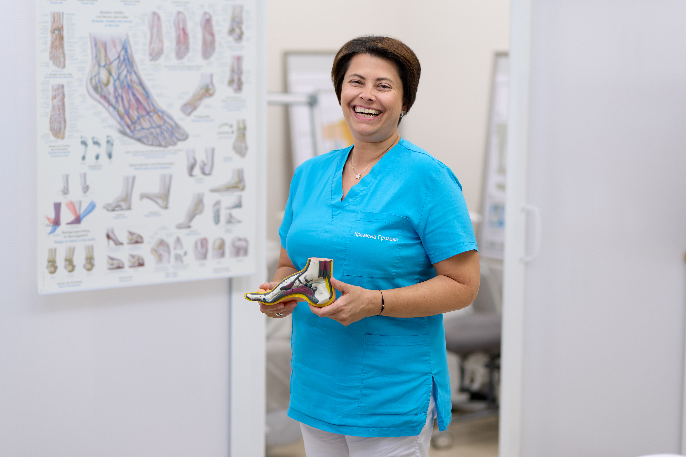
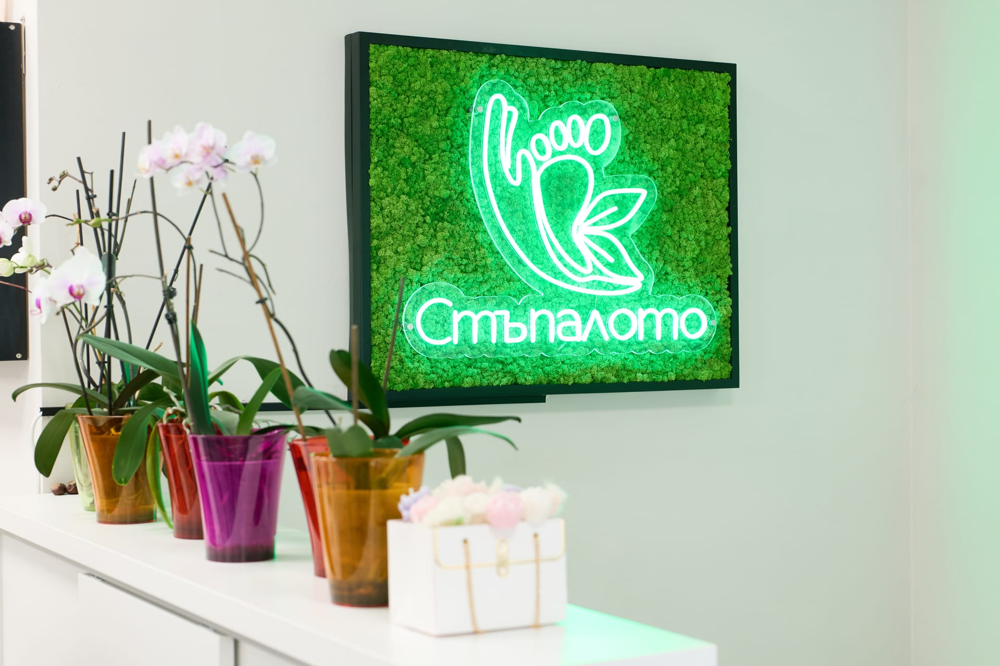
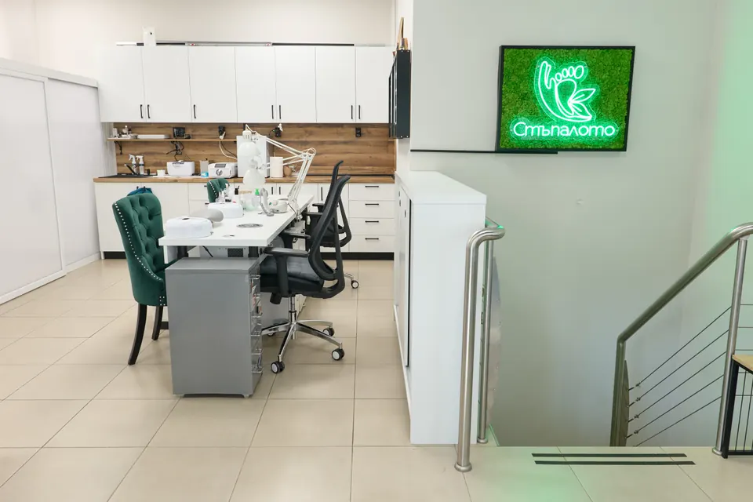

Професионална грижа за здрави и красиви стъпала
Терапевтичен педикюр, коригиращи системи и първокласен маникюр в спокойна, спа атмосфера.
Запази часДве лица, една грижа
Стъпалото обединява медицинската прецизност на терапевтичен център с изяществото на естетично студио.
Здрави стъпала без болка
- check_circle Специализиран (лечебен) педикюр при проблемни стъпала
- check_circle Коригиращи системи при врастнали нокти – PODOFIX, NiTi, 3TO
- check_circle Обработка на гъбични нокти, кератози и рагади
Красота до последния детайл
- check_circle Козметичен педикюр с обикновен или гел лак
- check_circle Класически маникюр и дълготраен гел лак
- check_circle Изграждане с ноктопластика и фини декорации
Нашите емблематични процедури
Следвайте пътеката – от терапевтичната грижа към естетичното изящество.
-
01
Терапевтичен педикюр
Професионална, нежна грижа за проблемни стъпала, мазоли и оптимално здраве на краката.
Виж терапевтичния педикюр arrow_forward -
02
Корекция на нокти
Безболезнени системи за дългосрочни решения при враснали и деформирани нокти.
Виж коригиращите системи arrow_forward -
03
Козметичен педикюр
Дълбоко релаксиращ ритуал, който оставя краката ви леки, меки и красиво полирани.
Виж козметичния педикюр arrow_forward -
04
Маникюр и ноктопластика
Първокласна грижа за ръце и нокти – прецизно оформяне, издръжливи удължения и изящни покрития.
Виж маникюра arrow_forward


Естетика и Козметика
В Стъпалото се извършват под наблюдението и контрола на Борислава Вандова козметични процедури от най-висок клас.


Нашите процедури
- LPG за лице и тяло
- BABOR терапии
- Бадемова терапия с REVIVRE
- Миглена мезотерапия
- Билков пилинг
- Пилинг Aesthetical
- Масаж на лице, шия и деколте
- Почистване на лице с микродермабразио + RF
- Детоксикираща и коктейлна терапия REVIVRE
- Хидратираща терапия 2B
- Биостимулация
- Кола маска
- Лазерна епилация
- Почистване, боя за вежди и мигли
Как протича посещението
Три спокойни стъпки от първия разговор до трайния резултат.
Консултация
Разглеждаме състоянието на стъпалата и ноктите ви и заедно избираме подходящата процедура.
Процедура
Работим със стерилни инструменти и специализирани продукти – внимателно, безболезнено и прецизно.
Домашна грижа
Получавате индивидуални съвети и план за поддръжка, за да запазите резултата задълго.

Нашата история на съвършенство
В Стъпалото вярваме, че здравето на краката е в основата на общото благосъстояние. Основани с визията да предефинираме опита в подологията, ние се отдалечихме от студената, стерилна среда на традиционните клиники.
Вместо това създадохме убежище, където медицинският опит среща спокойствието на първокласен спа център. Нашият всеотдаен екип използва най-съвременни техники и хигиенни стандарти, за да гарантира, че получавате най-безопасната, ефективна и релаксираща грижа.
Студио Галерия
Поглед към нашата спокойна и добре оборудвана среда.



Често задавани въпроси
Отговори на най-честите питания преди първото посещение.
Болезнен ли е терапевтичният педикюр?
Не. Работим с щадящи техники и модерна апаратура – повечето клиенти описват процедурата като облекчаваща. При чувствителни зони подхождаме допълнително внимателно.
Как се стерилизират инструментите?
Всички инструменти преминават пълен цикъл на дезинфекция и стерилизация в автоклав след всеки клиент, а консумативите са за еднократна употреба.
Какво да очаквам при първото посещение?
Започваме с кратка консултация и преглед, след което заедно избираме подходящата процедура. Първото посещение обикновено отнема 60–90 минути.
Помагат ли коригиращите скоби при врастнал нокът?
Да – системи като PODOFIX, NiTi и 3TO облекчават болката още при поставянето и постепенно коригират формата на нокътя, без прекъсване на ежедневието. Пълната корекция отнема няколко месеца.
Мога ли да си сложа гел лак при проблемни нокти?
Зависи от състоянието на нокътя. При активна гъбична инфекция първо лекуваме, а след възстановяване с удоволствие ще се погрижим и за естетиката.
Трябва ли предварително записване?
Да, работим само с предварително записани часове, за да отделим спокойно време на всеки клиент. Обадете се или ни пишете във Viber.
Посетете нашето студио
Готови сме да ви посрещнем в нашия оазис на спокойствие и изцеление. Свържете се с нас, за да запишете час.
Адрес
ул. Примерна 123
София, България
Работно време
Пон – Пет: 09:00 – 18:00
Съб: 09:00 – 17:00
Нед: Затворено
Свържете се директно
Изберете удобен за вас начин – отговаряме бързо през целия работен ден.